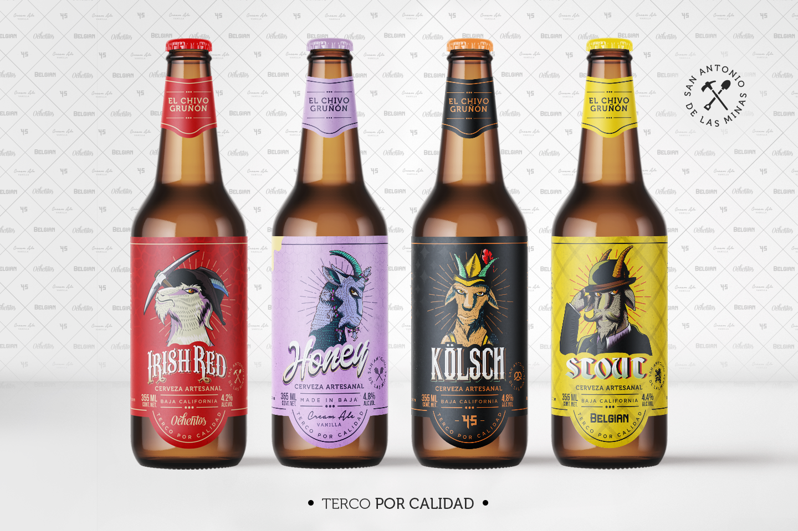

Chivo gruñón
From character concept to high-conversion packaging

Redesigning Chivo Gruñón's packaging experience to turn stubborn quality and irreverent character into an intuitive,
scalable product line.
Product
Chivo Gruñón is a craft brewery built on stubborn quality and singular character. Guided by their philosophy "Terco por calidad" (Stubborn for Quality), they bridge the gap between craft beer enthusiasts and casual drinkers through a diverse, personality-driven range.
Challenge
Redesign the craft beer packaging line to reflect the brand's bold, irreverent personality, creating a cohesive visual system that easily scales across new varieties without losing impact.
Solution
Engineered a scalable design system featuring custom illustrations of the signature "Grumpy Goat" mascot to distinctively personify each craft beer variety.